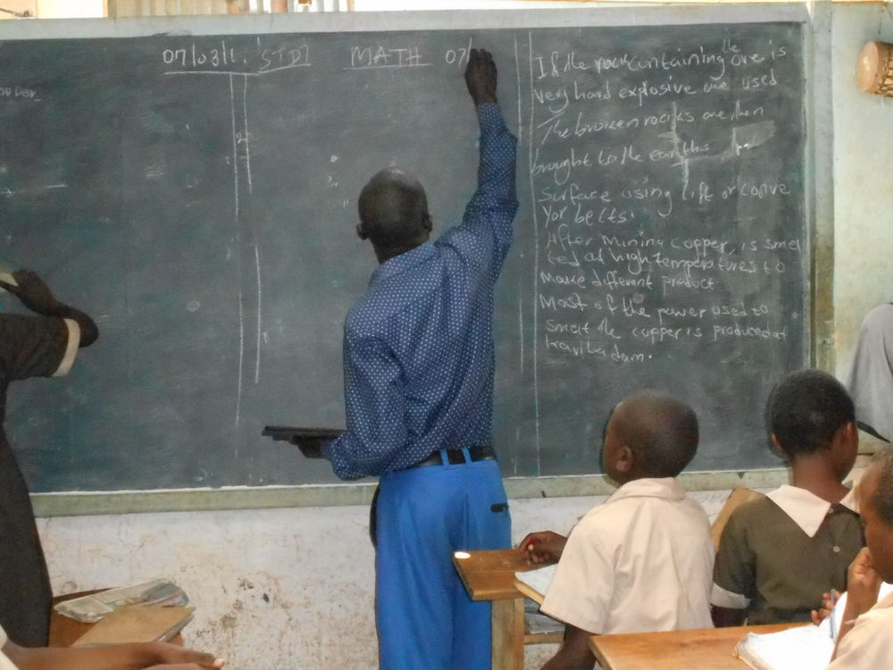
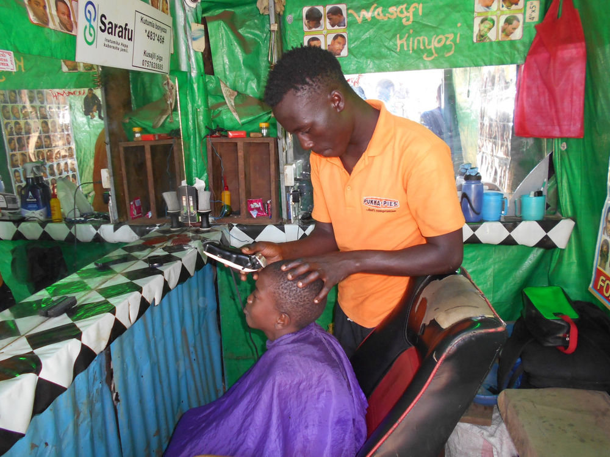
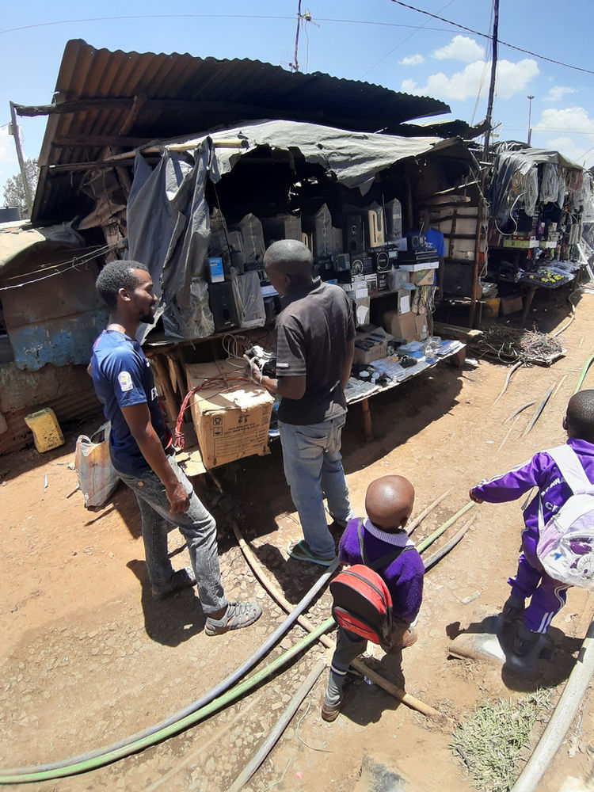

Women Powered Currencies
It is Women who make up as much as 90% of these networks and are the foundation of the real economy. Enjoy reading about people supporting each other in ways we never though possible without National Currency! Special shout out for for International Women's Day !
Below you will find examples of use cases in 4 neighboring communities in Nairobi slums using Sarafu (a group of Community Currencies which are Bancor Protocol enabled tokens on the POA.Network blockchain ) to support each other and develop a resilient economy.
We've never been able to link currencies together like this before and now have 9 currencies in circulation among 1,136 businesses, clinics and schools with 516,436 Tokens that have traded in one month a volume of 837,355 tokens (soft-pegged to Kenyan Shillings) in 11,155 Transactions for Food 34.4% Labour 25.9%Retail 19.2% Education 7.2% Freight / Travel 5.5% Water 3.3% Energy 2.3% Environment 2.0% Health 0.4% Using the Bancor Protocol each community promotes reciprocity and resilience by actively measuring trade imbalances through their relative currency values. See if you can see how these currencies are interwoven in the examples below.
1. CONGO

Susan Lukobo joined Sarafu 4 years ago. Ever since she joined Sarafu (using Congo Pesa her communities currency), she is able to pay teacher’s salaries on time, she has her pupils in class everyday every week, she no longer sends pupils home for school fees since her parents pay fee in Sarafu. She repairs desks from a carpenter who uses Sarafu and her school cook is able to buy lunch at a cheaper rate since she purchases from the Sarafu users.
Teacher Eric Mwaka joined sarafu four years ago. Sarafu has helped him save Kenya shillings as he is able to purchase his basic needs from other Sarafu users and in return he offers tuition their children. The amount in Kenya shillings that he is able to save on daily basis, he sends it to his family who are in the village.

Phostina is a carpenter who joined Sarafu 1 month ago. Initially she was accepting desk repairs from Skylife Academy but they were not paying on daily basis due to scarcity of Kenya shillings. When she was introduced to Sarafu, she liked the idea because the school always supplement the Kenya shillings with sarafu. She is now having more customers and she is in a position to sell her excess capacity (firewood, bed, sofa sets and cabinets) using Sarafu. Teachers have been buying beds, sofa sets and cabinets from her . Phostina also uses Sarafu to pay school fees for the daughter who studies in the nearest community (kangemi). She pays her workers in Sarafu also.

Doris owns a hotel near the carpenter and the school. She joined Sarafu 3 months ago. She is able to use Sarafu to buy firewood from Phostina . When teachers discovered that she joined Sarafu, they have been eating in her hotel. She is now having more customers who generate more income to her.
2. GATINA

Jackline Kasiva has been a member of Sarafu network for the last 9 months. Initially she never had clients on daily basis since people don’t plait hair every day. She could end up spending a day or two without clients. Others who came with less money were not plaited since she preferred money for every service offered. When she joined Sarafu, she no longer sends her clients back with the little Kenya shillings that they bring, in fact she encourages them to supplement with Sarafu and she is able to plait them. Sarafu has made her expand her business. She is also saving Kenya shillings whenever she spent Sarafu and now she is not only plaiting hair but she is also selling the hair products.

Jacinta Mutumi is a tailor based in Gatina. She joined sarafu 5 months ago and she is happy that Sarafu made her get more customers who want their clothes mended or want their children’s uniform repaired. She was able to save Kenya shillings which she used to take her son to high school with it. She uses Sarafu to plait her hair and also get vegetables from her neighbour.

Elizabeth Achacha has a vegetables kiosk. Initially she was selling vegetables alone and she could sleep (go home) with some of the greens which are perishable. She joined Sarafu 2 years ago and has been able to utilize her excess capacity. None of her stock goes bad as before and she has also expanded her business - from selling vegetables alone to now selling tomatoes and onions alongside the vegetables.
3. OLYMPIC
Walter Omondi has a barber shop. He joined Sarafu 2 weeks ago. So far he has been able to get new customers who are coming to shave using Sarafu. Last week he was able to repair his shaving machine from Cornelius Odongo and he paid in Sarafu. Walter eats lunch at Isaac Abwao,s hotel and he buys omen for his family for dinner from Mama Sharon (Hellen). Attached picture is of mama’s Sharon grandchild getting a haircut from Walter.

Mama Sharon also known as Hellen Achieng sells omena around Kamukunji area of Olympic, kibra. She also joined Sarafu 2 weeks ago. So far she has used sarafu to purchase chapati from Angelin Aluoch and her grandchild was able to get a haircut from Walter using Sarafu. She is excited about Sarafu. She sees it as an opportunity for her to grown her business and expands her market.

Angelin Aluoch joined Sarafu 2 weeks ago. She told me that she was able to save ksh 50 when she purchased omena for her family from mama Sharon. She has 2 children who got a haircut from Walter last week. The two children go to school using a boda boda who lucky enough joined Sarafu hence causing her to spend less of Kenya shillings and is able to get her basic needs.
Cornelius Odongo repairs and sells electronics. He joined 2 years ago and he got a haircut from Walter using Sarafu. Cornelius was able to fix Walter’s machine and he also brought his friend Isaac Abwao to be part of Sarafu. He currently takes lunch from Isaac’s hotel and has bought omena and chapati to feed his family. He is happy that he and his family is no longer sleeping hungry since he can still access basic needs without using the scarce Kenyan currency.
4. LINDI

Pastor Silvanous joined Sarafu 3 years ago. He is the main pastor of Hope Gospel Center. The congregation pays their tithes and offerings to him in form of Sarafu. He uses the same amount to go back to the congregation to purchase basic needs. He has also rented the church to a school and in return he receives rent in Sarafu. The pastor told us that his congregants are happy to use Sarafu in his church (as Tithing/Sadaka) and he accepts it since he will still go back to the congregants to get his basic needs. He says that Sarafu has united them and as a church they have now started a savings scheme due to Sarafu.

Madam Basilisa is the headteacher of Hope Academy which is based inside Hope Gospel church. The madam receives Sarafu from parents as fees and in return, she is able to pay part for the school rent using Sarafu. She is no longer having issues of arrears with the church as before. Parents (one on a motorcycle here) too are paying fees in Sarafu and she is happy that none of her children is unable to come to school due to lack of school fees.
#WomensDay #cryptocurrency #Nairobi #SchoolFees #Education